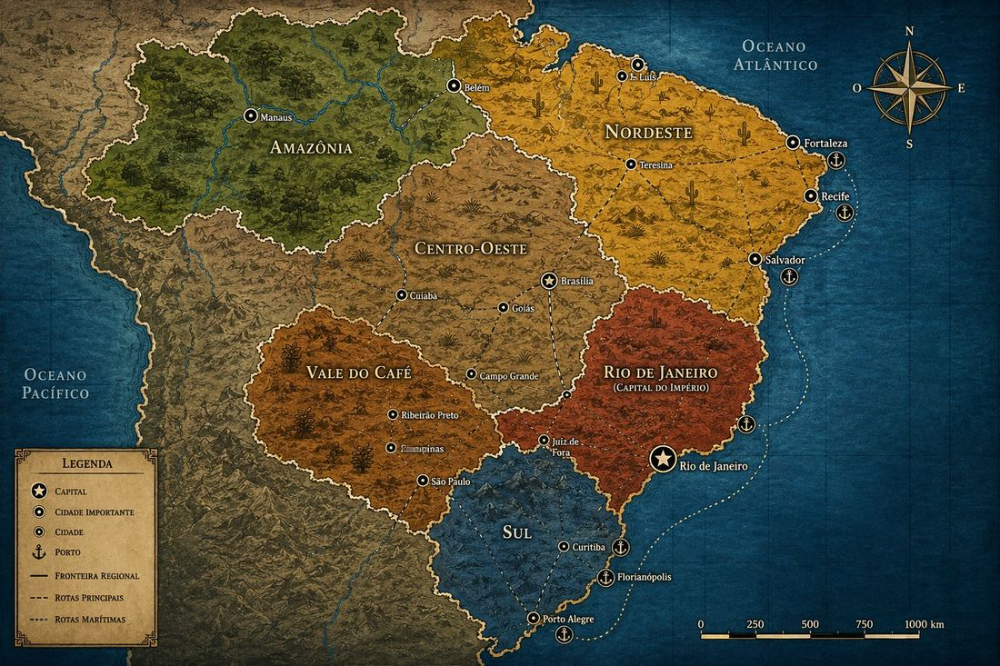

Controles do Mestre
Toque em uma opção para selecioná-la e depois confirme.
Rio de Janeiro · 1889
A Trindade Filosófica
Escolha o seu papel nesta sessão
Toque em uma opção para selecioná-la e depois confirme.
Carta topográfica

Posição atual do grupo.
Todo o caminho filosófico registrado será apagado e a turma volta ao prólogo.